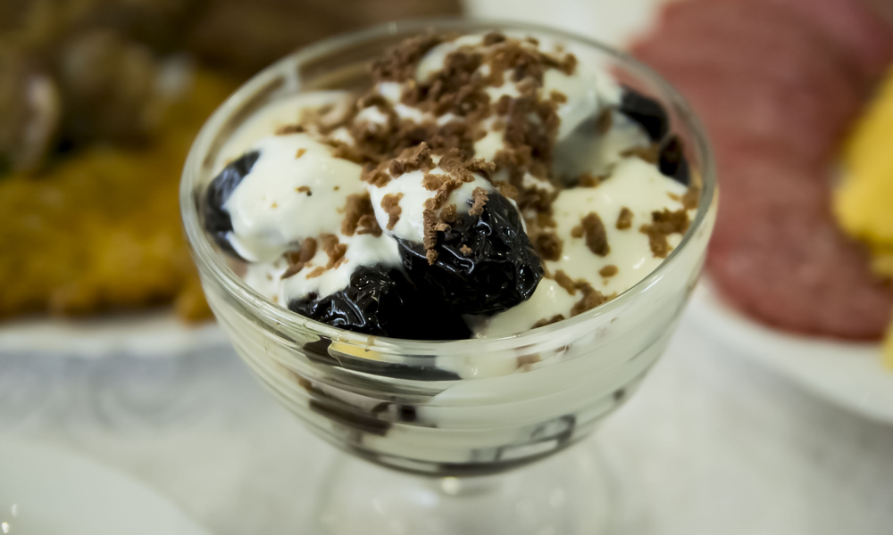

Walnut-Stuffed Prunes

Description
Desserts don’t have to be fancy to be scrumptious. Walnut-stuffed prunes are a prime example of an unpretentious dessert
that is as simple to prepare as it is satisfying to eat. This is a great recipe to make with kids, because it takes no more than
20 minutes for a child to whip up a platter full of these treats. That means no waiting time for
your child to eat what they’ve prepared. These yummy prunes are the very definition of instant gratification!
Ingredients
- 10 prunes
- 10 walnut halves
- ¼ cup condensed milk (or heavy cream mixed with 1 t. sugar and ¼ t. vanilla extract)
- ¼ cup grated semisweet chocolate
Allergens highlighted in red.
Steps
- Pour warm water over prunes and allow to sit for 1-2 hours.
- When the prunes are soft, drain off the water and pat the prunes dry.
- Place 1 walnut half into each prune. Repeat until all the prunes have been stuffed with walnuts.
- Arrange the prunes in a serving dish and pour the condensed milk over the prunes to coat each one.
- Sprinkle with the grated chocolate, and serve!
- Place on a platter. Pour condensed milk over the prunes, trying to coat each one.